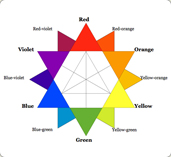
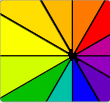

Color Theory for Designers

What evokes one reaction in one person may evoke a very different reaction in somone else.
Sometimes this is due to personal preference, and other times due to cultural background.
Color theory is a science in itself. Studying how colors affect different people, either
individually or as a group, is something some people build their careers on. And there’s a
lot to it. Something as simple as changing the exact hue or saturation of a color can evoke
a completely different feeling. Cultural differences mean that something that’s happy and
uplifting in one country can be depressing in another.
view more...
Top review

A Quick Review
Let’s start with a quick review of what
was covered in parts 1 and 2. In part 1,
we talked about how all colors have
inherent meanings, which can vary
depending on the country or culture.
These meanings have a direct impact...
view more...

Traditional Color Scheme Types
There are a number of predefined
color scheme standards that make
creating new schemes easier,
especially for beginners. Below are
the traditional schemes, with a few
examples for each...
view more...